Design & Development
An idea isn’t a product until it’s engineered. We turn your brief, sketch, or reference into a technical package a factory can build and samples you can approve.
Behind the brands people wear is a chain of ideas, details and delivery. From the kit on the pitch to the label inside the collar, we help turn concepts into products people can trust.
Learn More About Us →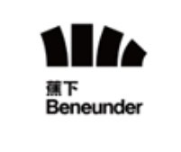
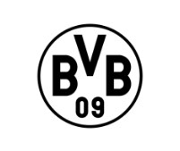
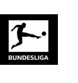
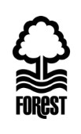
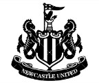
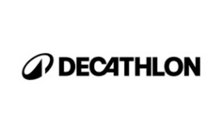
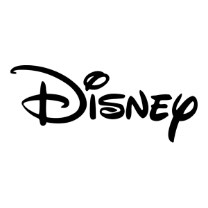
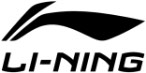
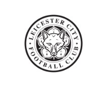

“We don’t make the badge to be seen. We make it to be worn with pride.”
The PCCS ManifestoIt’s the part people touch first and trust most — the mark that turns cloth into something you’re proud to put on. The world’s biggest names don’t hand that to just anyone. For fifty years, they’ve handed it to us.
Anyone can cut cloth. The official crest is entrusted only to a maker who meets the brand’s standards — that’s us.
An idea isn’t a product until it’s engineered. We turn your brief, sketch, or reference into a technical package a factory can build and samples you can approve.
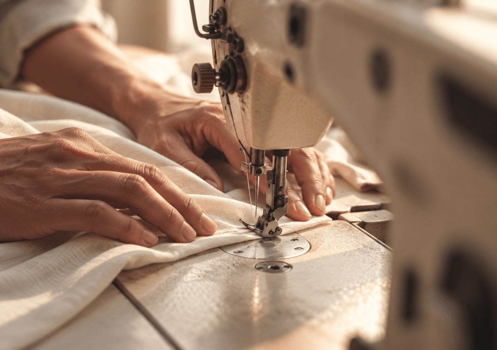
Embroidery, print, sublimation, seamless — the marks and crests the world’s most protected brands trust to our hands. This is the heart of our craft.
Quality isn’t a final inspection — it’s built in from the cut. We check inline, during production, and before shipment.
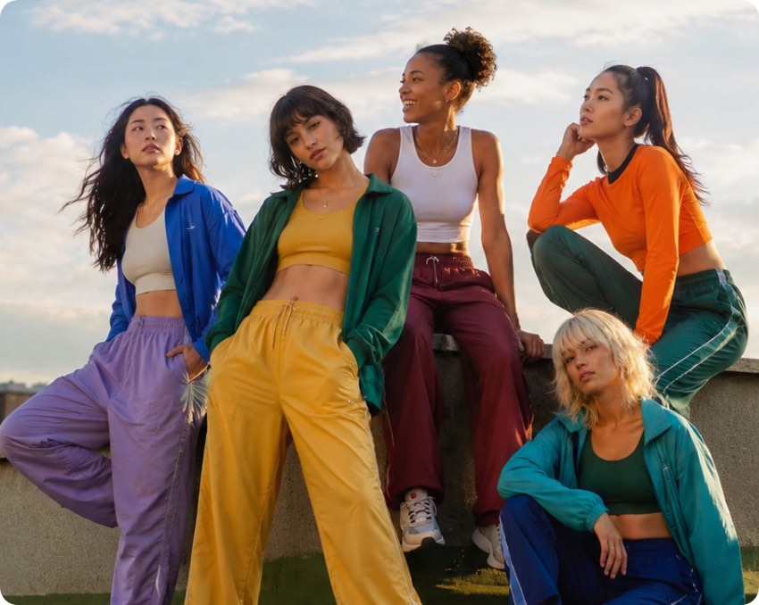
The craft engine of the group — design, embellishment and manufacturing for the world’s leading sport and lifestyle brands. Where the badge is made.
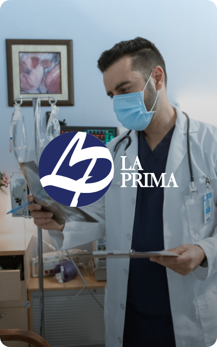
专注医疗器械与健康科技，为亚太地区带来更好的医疗方案。
让信贷更简单，提供汽车、个人及医疗设备融资与保险服务。
PCCS has reported sustainability since FY2018, to Bursa Malaysia’s standard. The numbers are audited, not aspirational.
PCCS manufactures technical sportswear for the world’s biggest brands — and increasingly owns the higher-value parts of the chain: development, the mark, and now fabric. This expanding capability gives PCCS a clear path from cut-and-sew manufacturing to a broader product and materials platform.
Investor Relations →
Join the hands behind the world’s biggest brands — in design, engineering, craft and beyond. The next fifty years start with you.
探索职业机会 →